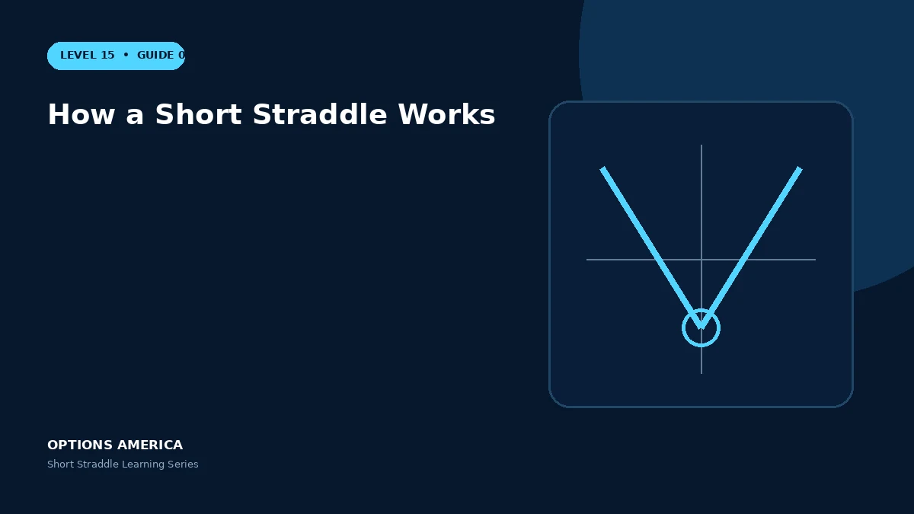

Understand the mechanics of selling a call and put at one strike, including premium, assignment and changing directional exposure.
Two obligations
The short call obligates the seller to deliver shares if assigned, while the short put obligates the seller to buy shares. Only one side is normally in the money at expiration, but both legs retain value before expiration.
Credit and breakevens
Add both option premiums to find the opening credit. Add the credit to the strike for the upper breakeven and subtract it from the strike for the lower breakeven at expiration.
Delta changes
Near the strike, call and put deltas can partly offset. A rally makes the call delta more negative for the seller; a decline makes the put delta more positive in absolute directional risk.
Lifecycle
Profit can arrive through time decay or a volatility contraction without waiting for expiration. Loss can accelerate through gamma, a volatility spike, widening markets or a margin increase.
A practical example
A 50-strike call and put sell for a combined $5. The trade is profitable at expiration between $45 and $55, with the full $5 earned only at $50.
This simplified scenario focuses on expiration outcomes; live prices and risks will differ. Live option prices also reflect the underlying price, time decay, rates, dividends, liquidity and transaction costs. Greeks are theoretical estimates, not guarantees.
Build a risk-first trading plan
Before using how a short straddle works, record the underlying price, strike, expiration, total credit and contract multiplier. Calculate both expiration breakevens, then model losses beyond them rather than stopping at the profitable range. The maximum credit is visible at entry, but the largest future loss is not.
Stress at least five underlying prices, a volatility increase and decrease, and several dates. Include a gap that cannot be adjusted intraday. Review delta, gamma, theta and vega at the position and portfolio level because several neutral premium trades can become directional together.
Define a profit target, maximum tolerated loss, margin reserve, event rule and latest exit date. Use a single multi-leg order where possible and verify both legs after every fill or adjustment. This process does not eliminate risk, but it makes the decision measurable and repeatable.
After the trade, record actual movement, volatility change, slippage and the largest directional exposure. Comparing those results with the original forecast helps separate sound execution from a lucky outcome and improves future duration, strike and position-size decisions.
Frequently asked questions
Must both options be ATM?
The classic straddle uses the same near-ATM strike.
Can both legs be assigned?
It is possible under unusual conditions and should be planned for.
Does neutral mean low risk?
No.
Continue the Short Straddle cluster
Explore related guides: Short Straddle Profit, Loss and Breakevens · Short Straddle vs Iron Butterfly · Short Straddle Expiration and DTE Selection. For a structured sequence, use the free Level 15 – Short Straddle course.
Options involve risk and are not suitable for every investor. This material is educational and is not investment, tax or legal advice. Greeks are theoretical estimates, and contract terms and broker requirements can vary.